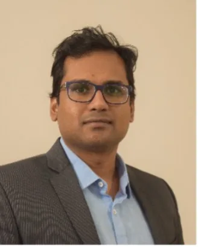
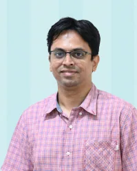

PRO-02Project 2 of 2 in Processes
Catalytic Processes for Coal to Methane and Methanol
- Aim 01
Bio-syngas characterisation, process modelling and methanol synthesis evaluation.
- Aim 02
Catalyst and process optimisation for CO/CO2 mixed hydrogenation of coal-derived syngas to methanol and methane.


Inside the research
Coal-derived and bio-syngas
Characterisation and process modelling
Catalytic CO/CO2 hydrogenation
- Methane
- Methanol
Team
Principal Investigators

Prof. Varunkumar S
Principal Investigator

Dr. Sagar Sourav
Principal Investigator

Dr. Jithin John Varghese
Principal Investigator

Prof. Niket Kaisare
Principal Investigator
Research Team

Mr. Sathiyababu V
Principal Project Officer
Activity
- 17 Apr 2026Official logo and website launchedNews